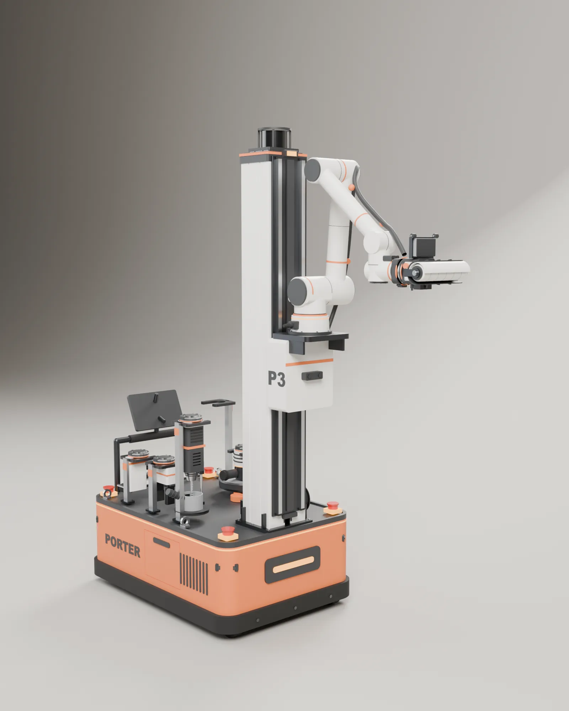
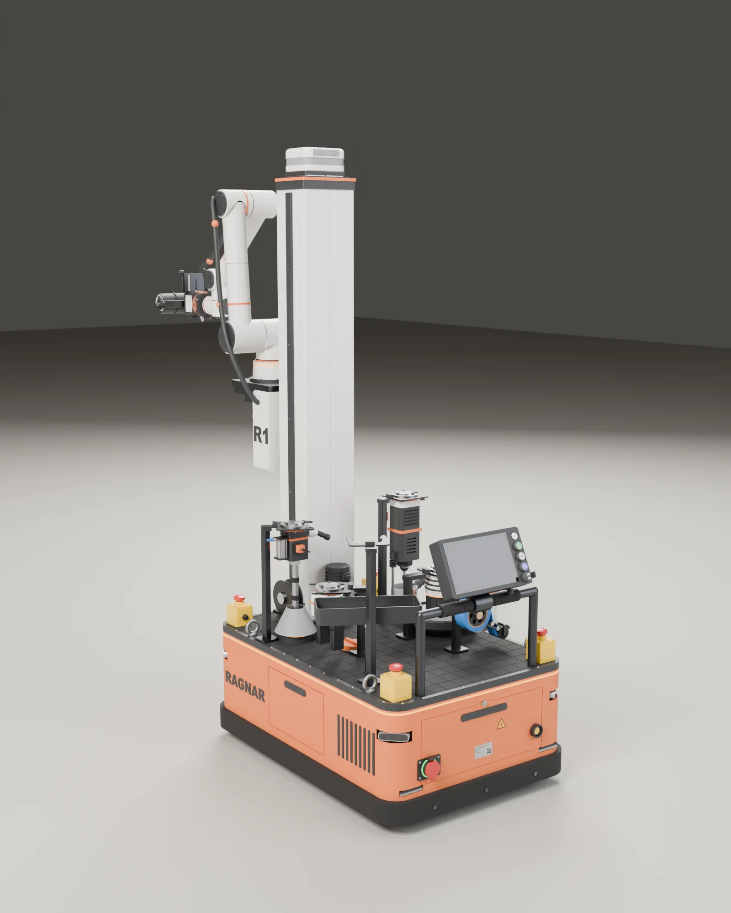
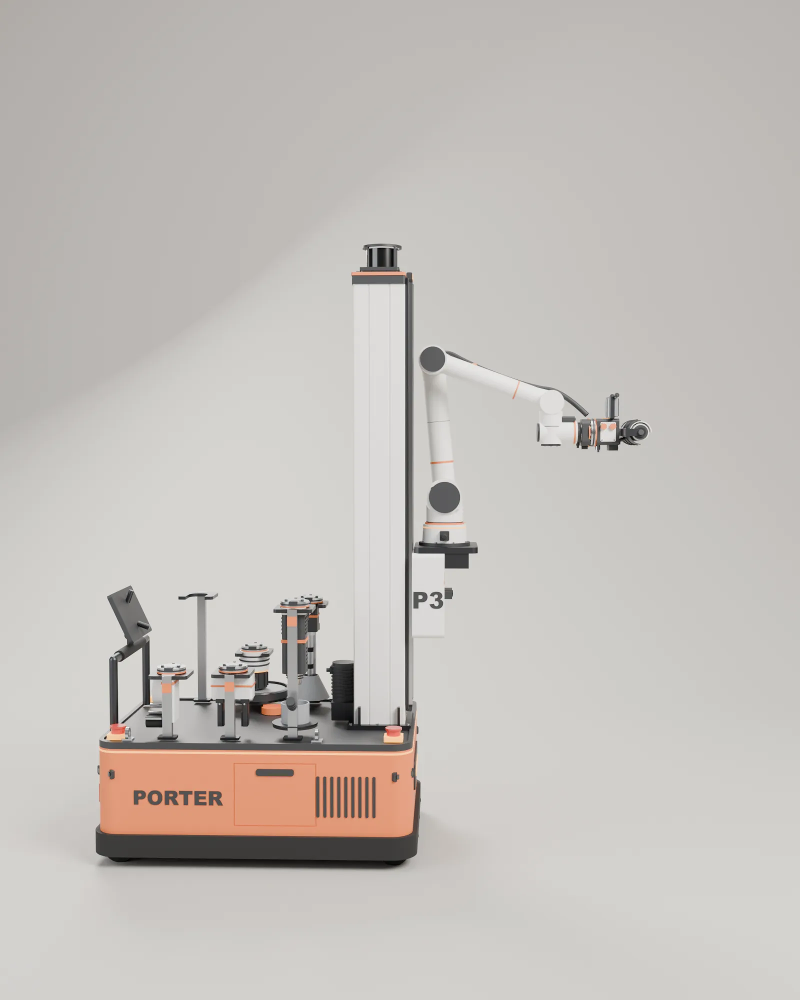
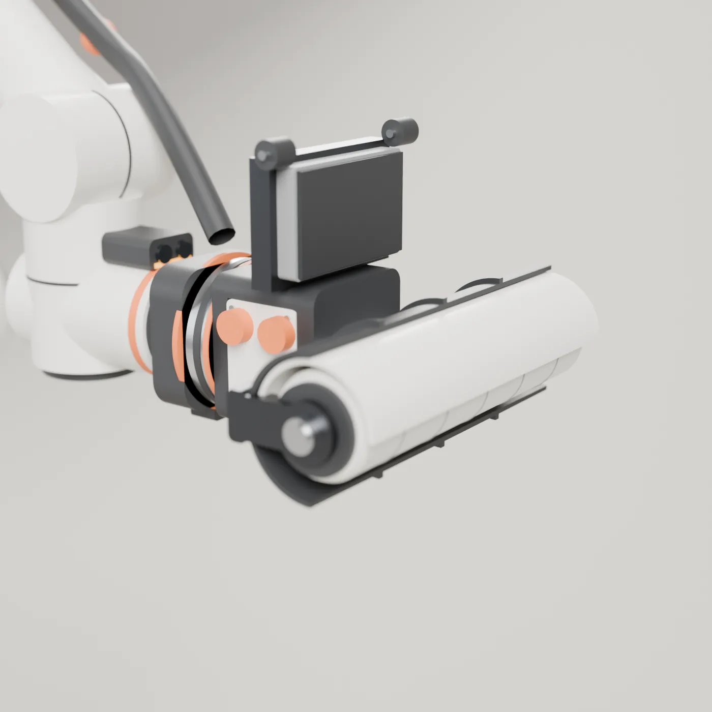
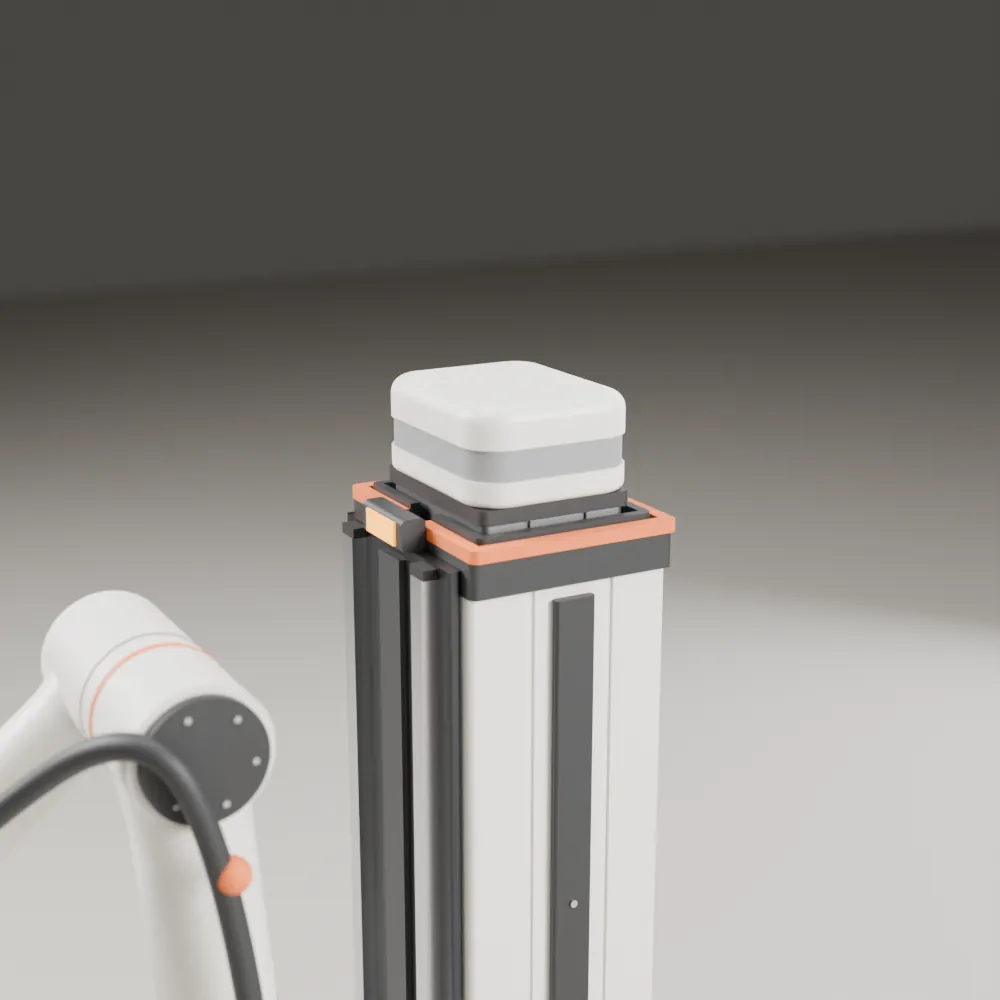
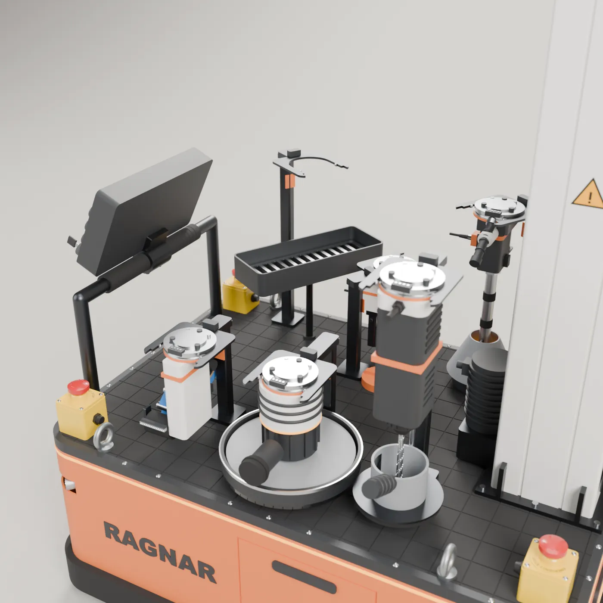
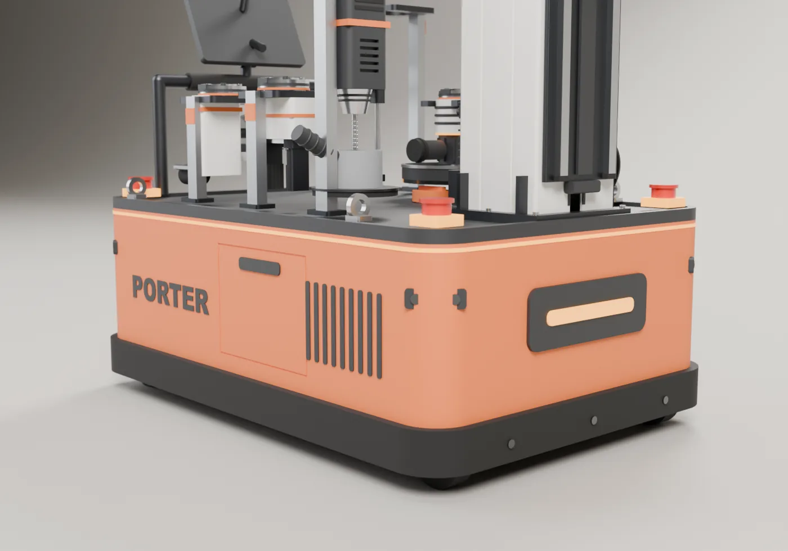

P3, up close
One robot for the light, repetitive work inside a building: paint, sand, drill, mark, install small parts and check the result. Everything here comes from the CAD model and our simulations; P3 has not been built yet.


P3 at work
A one minute film animated from the CAD model and the arm's real joint limits, with every move checked for collisions: P3 drives in sideways, rolls a wall lane by lane, cuts the ceiling line while it drives, puts the roller back in its dock, picks up the drill and drills three holes.
P3
A swerve drive base, a three stage mast and a six axis arm. The base carries the paint, the batteries and six tools; the mast lifts the arm; the arm swaps tools on its own.
- Wall reach From the baseboard up, with the mast raised
- 16 ft
- Height, stowed Fits under an 80 in door
- 2.0 m
- Weight Empty; about 186 kg with a full paint tank
- 174 kg

- LiDAR. On top of the mast, it maps the room and finds walls, doors, trim and people.
- Three stage mast. Stows at 2.0 m and lifts the arm so tools reach 16 ft walls and 17 ft ceilings.
- Six axis arm. A collaborative arm with 7.5 kg payload, 0.95 m reach and force sensing at the wrist.
- Tool changer. Passes paint, air, vacuum and signals to the tool, and holds it without power.
- Tool station. Six docks on the deck: roller, sprayer, sander, drill, gripper and tape.
- Base. Two swerve drive modules move it in any direction, including sideways along a wall.
The details
The parts that do the work, up close.




Specs
Design targets
- Footprint
- 0.72 by 1.04 m with the bumper; fits a 36 in door
- Height, stowed
- 2.0 m; fits under an 80 in door
- Work height
- Walls to 16 ft (5.0 m), ceilings to 17 ft (5.3 m)
- Weight
- About 174 kg empty, 186 kg with a full tank
- Drive
- Two swerve modules and four casters; drives sideways along a wall
- Lift
- Three stage telescopic mast; the arm carriage travels 3.3 m
- Arm
- Six axis collaborative arm, 7.5 kg payload, 0.95 m reach, force sensing
- Tools
- Paint fed roller with edger pad, sprayer, sander with dust extraction, rotary hammer with vacuum clamp, gripper with palm camera, tape applicator
- Paint
- 10 L tank and pump in the base
- Power
- Two battery packs, swapped through the rear door
- Sensing
- 360 degree LiDAR, four depth cameras on the base, a front camera on the carriage, a wrist camera and a color sensor
- Operator
- 10 in screen on the handle, plus a tablet
Numbers come from the current CAD model and our kinematics. The prototype has not been built yet, and these numbers will change as we test it.